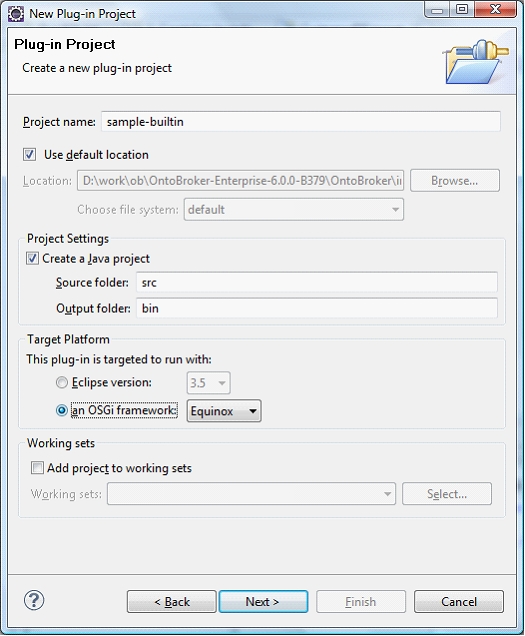
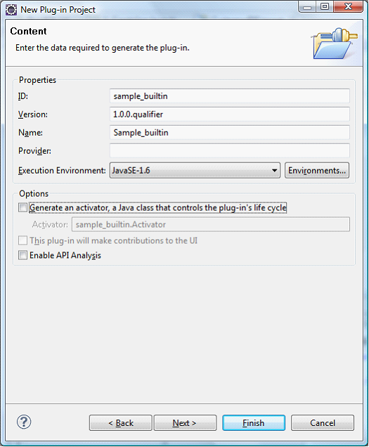
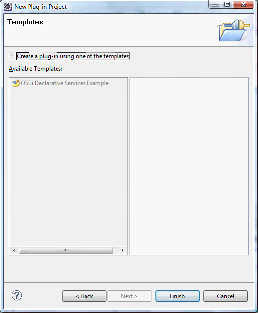
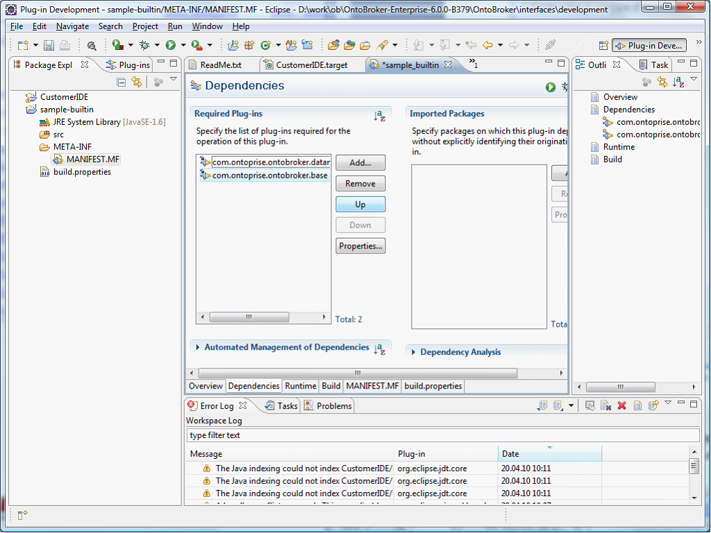
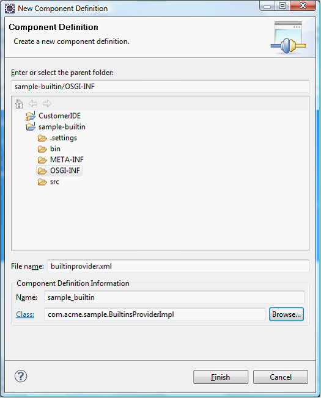
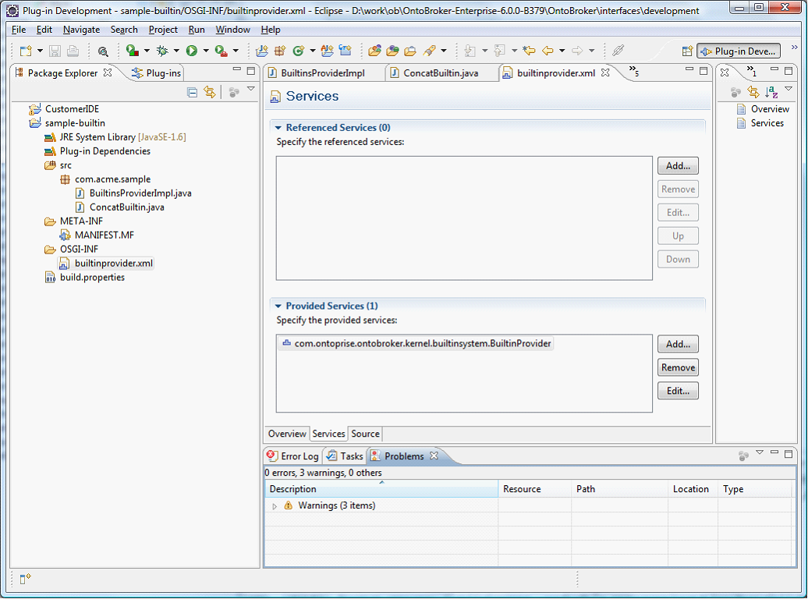
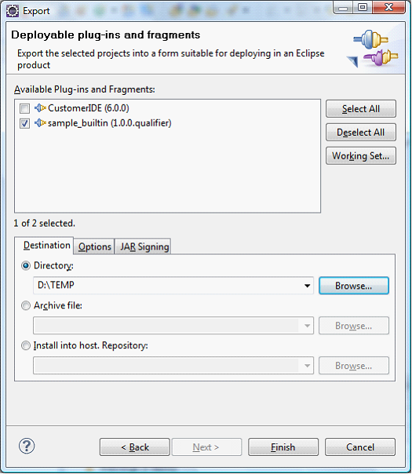

|

|
|
Writing a Built-in for OntoBroker 6 |
|
|
|
|
Writing a Built-in for OntoBroker 6 |
External builtins for OntoBroker must be packaged as an OSGi bundle. The bundle has to provide a BuiltinProvider service to announce its built-ins. After setting up the environment in Eclipse, you create your own built-in project in the following way:
| 1. | Eclipse Main menu File -> New -> Other… -> Plugin-Project. |

| 2. | Ensure to check an OSGi framework in the Target Platform group. |
| 3. | Press Next. |

| 4. | Deactivate Generate an activator. |
| 5. | Press Next. |

| 6. | Deactivate the checkbox Create a plug-in using one of the templates. |
| 7. | Press Finish. |
Now add OntoBroker dependencies.
| 8. | Select META-INF/MANIFEST.MF and double-click to open the editor. |
| 9. | Switch to tab Dependencies. |

| 10. | Press the Add… button of the required plug-ins and add |
| • | com.ontoprise.ontobroker.base |
| • | com.ontoprise.ontobroker.datamodel |
| 11. | Press the Add… button of Imported Packages and add org.apache.log4j. |
| 12. | Save the changes. |
| 13. | Add the following classes: com.acme.sample.ConcatBuiltin.java. |
package com.acme.sample;
import java.util.BitSet;
import org.semanticweb.kaon2.api.KAON2Exception;
import org.semanticweb.kaon2.api.KAON2Manager;
import org.semanticweb.kaon2.api.OntologyLanguage;
import org.semanticweb.kaon2.api.logic.Term;
import com.ontoprise.ontobroker.api.extension.builtin.IBuiltinContext;
import com.ontoprise.ontobroker.api.extension.builtin.IFunctionalBuiltin;
import com.ontoprise.ontobroker.api.extension.builtin.IGrounds;
import com.ontoprise.ontobroker.apibase.extension.builtin.BuiltinSpec;
import com.ontoprise.util.OntopriseConstants;
import com.ontoprise.util.TermUtilities2;
/**
* Example built-in which concats two strings.
*/
public class ConcatBuiltin implements IFunctionalBuiltin {
/**
* This method is called during the evaluation. We must first check which of our four possible signatures applies and then either calculate the result or
* check if a result is valid
*
* @param tuple the tuple which must be checked
* @throws InterruptedException if the process was interrupted
* @throws KAON2Exception if an error occurs
*/
@Override
public boolean evaluate(Term[] input, IGrounds grounds) throws KAON2Exception, InterruptedException {
String str1 = TermUtilities2.getConstantValueAsString(input[0]);
String str2 = TermUtilities2.getConstantValueAsString(input[1]);
System.out.println("str1=" + str1 + ", str2=" + str2);
if (str1 == null || str2 == null)
return false; // input parameters cannot be converted to strings
String s = str1 + str2;
Term result = KAON2Manager.factory().constantString(s);
switch (grounds.getInt()) {
case IGrounds.FIRSTSECONDTHIRD:
return result == input[2]; // unify calculated and given result?
case IGrounds.FIRSTSECOND:
input[2] = result;
return true;
default:
return false; // should never be reached because of behaviour of isEvaluable
}
}
/**
* This method will be called after evaluation for cleanup purposes.
*
* NOTE: It is possible that this operator will be used again when the same query object is openened again.
* init() won't be called a second time.
*
* @throws KAON2Exception Is thrown on Error
* @throws InterruptedException Is thrown on Interruption
*/
public void evaluationFinished() throws KAON2Exception, InterruptedException {
// This built-in has just one state, no need to set it back.
// It is used to set a built-in to the post-init() state.
}
/**
* Method to get informations about this built-in. This method has to deliver a valid BuiltinSpec object
* after the constructor finishes, before init() has be called.
*
* @return BuiltinSpec object with informations about this built-in.
*/
public BuiltinSpec getInfo() {
BuiltinSpec.Builder builder = new BuiltinSpec.Builder(this, "obl:reserved:myconcat", 3);
builder.setAllowedOntologyLanguages(OntologyLanguage.OBJECTLOGIC);
builder.setDescription("Concats two strings");
builder.setParameters("first string", "second string", "result");
return builder.build();
}
/**
* Initialisation of this built-in. This is done for the instance before evaluation.
*
* @param context Contains additional Informations needed for some built-ins
* @param args Term[] that contains the literal arguments.
* @throws KAON2Exception Is thrown on Error
* @throws InterruptedException Is thrown on Interruption
*/
public void init(IBuiltinContext context, Term[] args) throws KAON2Exception, InterruptedException {
// Nothing to do, as this built-in does not need any initialization.
}
/**
* Method to determine if a certain grounds configuration is evaluable.
* This method has to be usable context free, init() is called in an other instance as
* isEvaluable will be called. All needed information should be provided by the current
* method arguments.
*
* @param grounds Object with grounding informations.
* @param variableInstantiations This BitSets has the instantiation of all variables that occurs. Needed especially if partial-ground functions are used.
* @param builtinContext BuiltinContext with additional context informations
* @param args Literal arguments
* @return if this grounds are evaluable or not.
* @throws KAON2Exception Is thrown on Error
*/
public boolean isEvaluable(IGrounds grounds, BitSet variableInstantiations, IBuiltinContext builtinContext, Term[] args) throws KAON2Exception {
// first and second argument must be ground
switch (grounds.getInt()) {
case IGrounds.FIRSTSECONDTHIRD:
case IGrounds.FIRSTSECOND:
return true;
default:
return false;
}
}
}
com.acme.sample.BuiltinsProviderImpl.java
package com.acme.sample;
import java.util.ArrayList;
import java.util.Collection;
import com.ontoprise.ontobroker.api.extension.builtin.IBuiltin;
import com.ontoprise.ontobroker.kernel.builtinsystem.BuiltinProvider;
/**
* Provider for sample builtins
*/
public class BuiltinsProviderImpl implements BuiltinProvider {
@Override
public Collection<Class<? extends IBuiltin>> getBuiltins() {
ArrayList<Class<? extends IBuiltin>> list = new ArrayList<Class<? extends IBuiltin>>();
// this bundle has only one built-in
list.add(ConcatBuiltin.class);
return list;
}
}
Declare the service
| 1. | Add the folder "OSGI-INF" to the project. |
| 2. | Select the folder and choose from the context menu New -> Component Definition. |
| 3. | Fill the wizard. |

| 4. | Select the tab Services and add to Provided Services: com.ontoprise.ontobroker.kernel.builtinsystem.BuiltinProvider |

| 5. | Export the Jar file by selecting the sample-builtin project and choose Export -> Deployable plug-ins and fragments. |

Now you have the sample_builtins_1.0.0.xxxx.jar in the directory D:\TEMP\plugins
Use the built-in
Copy this jar file to the OntoBroker extensions directory to use the built-in.
On adding the jar file to the extensions directory you should see following message in the log:
INFO [CONFIG] Builtin added: obl:reserved:myconcat/3
Run following query:
?- _myconcat("ab", "cd", ?X).
You should get as result:
?X = "abcd"